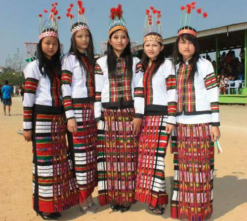
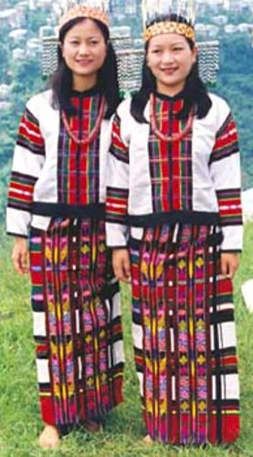
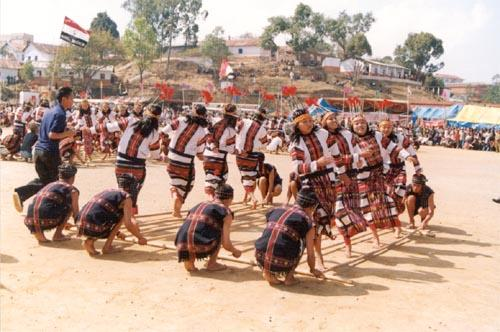
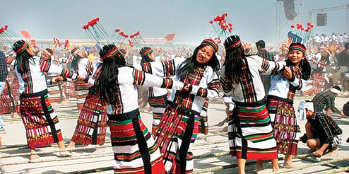

Mizoram
- Home
- Food

- Fashion
 
- Festival
- Chapchar Kut
- Pawl Kut

Pawl Kut
Pawl Kut in Mizoram is a colorful harvest festival that is accompanied with ballet, songs and jollity. There is a historical concoction to the Pawl Kut Festival. In the ancient times the Mizos had been staying in the eastern part of the Tiau River. This is in Chin Hills, presently contained by the Burma Border.

Chapchar Kut
The Chapchar Kut Festival is one of the extravagant Fiestas in Mizoram and is regarded as one of the grand carnivals that are held in the state. It is visited by numerous people from across the country who enjoy the richly hued fete; it is almost a National Level Fiesta and therefore the Chapchar Kut is the most delicate and sensitive gala event in Mizoram. - Pawl Kut
- Chapchar Kut